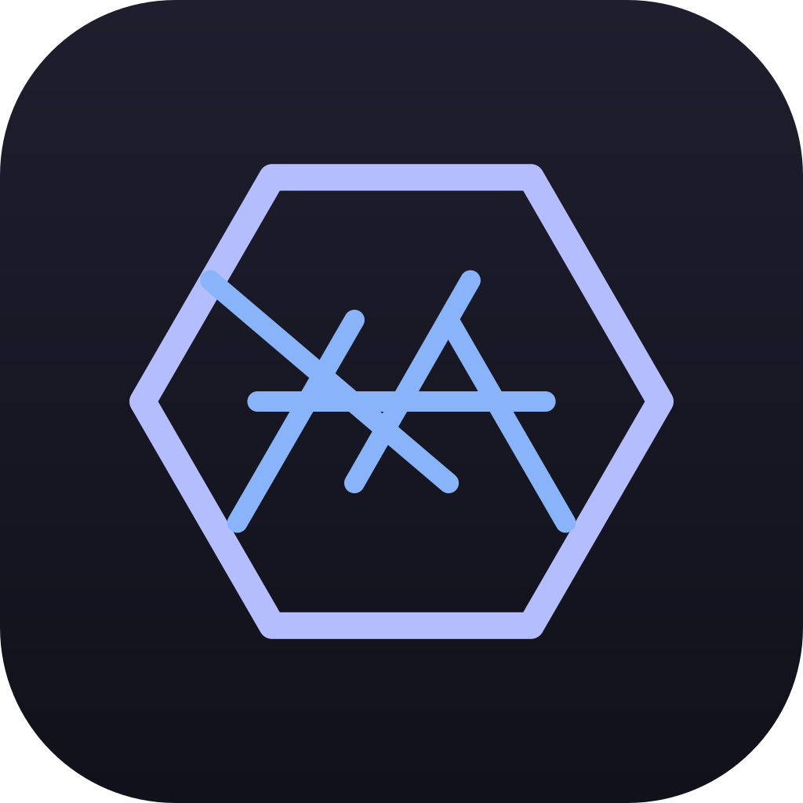
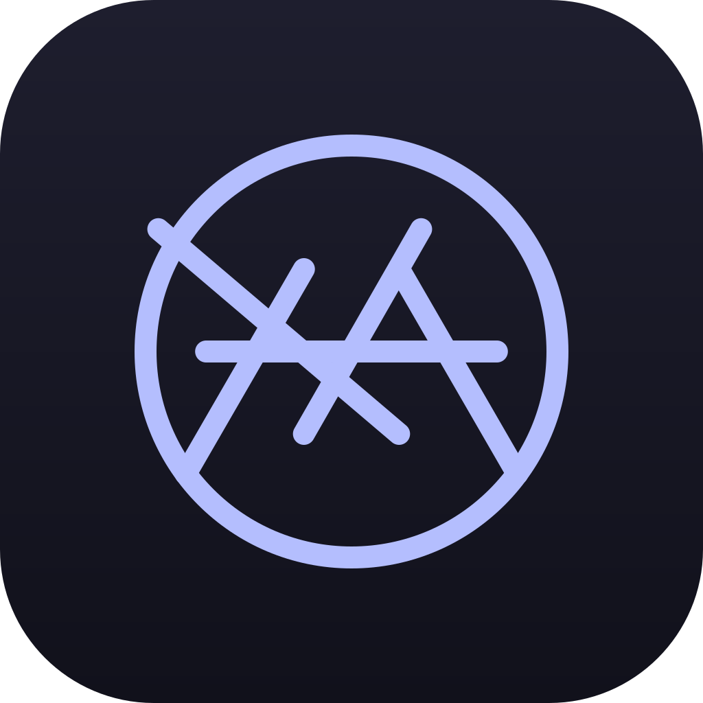

OxDM app-icon concepts — legibility check (open in a browser)
Each row shows the same SVG at 256 / 128 / 64 / 32 / 16 px. The 16 px
column is the taskbar/favicon test — if it’s muddy there, the design is too busy.
A · Hex + aperture

256128643216
Keeps the existing hexagon brand, camera aperture inside. Two-tone.
B · Pure aperture

256128643216
Cleanest, most “camera”. Drops the hexagon brand link.